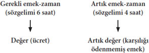
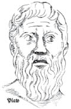
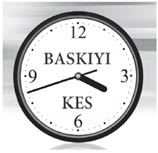
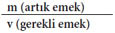
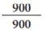
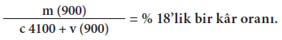

Bölüm 4

DEĞER
Marx’ın, çalışma gününü, haftasını ya da yılını gerekli emek-zaman ve artık emek-zaman diye ikiye ayırdığını gördük. Gerekli emek-zaman, işçilerin alıştıkları ya da kabul edecekleri biçimde, rahat ya da rahatsız şekilde yaşamasına yetecek kadar değeri üretmek için gerekli zaman demektir. Bu da ücretle görünür hâle gelir.
Günlük geçim araçlarının değeri maddeleşmiş 6 iş saatini temsil ediyorsa, bu değeri üretmek için, işçinin ortalama olarak günde 6 saat çalışması gerekir.
Marx, Kapital, s. 216
Marx, (yansımasını ücrette bulan) gerekli emek-zamanı aşan, işçilerin kendileri için hiçbir değer üretmedikleri süreye artık emek-zaman demektedir.
Kapitaliste yoktan yaratmanın bütün güzelliklerini sunan artık değeri oluşturur.
Marx, Kapital, s. 216

Bu da, artık emek-zamanın değerini arttırması için işçinin üzerinde hiç bitmeyen sürekli bir baskı anlamına gelir. Değer yaratmayı ve artık değer yaratmayı ele alırken Marx der ki:
Artık değer yaratma süreci ile değer üretme sürecini karşılaştırırsak, artık değer yaratma sürecinin, belli bir noktanın ötesine uzatılmış bir değer yaratma sürecinden başka bir şey olmadığını görürüz. Değer yaratma süreci, sadece, sermaye tarafından satın alınmış olan emek gücünün değerinin yerini yeni bir eşdeğerin aldığı noktaya kadar sürse, bu, basit değer yaratma süreci olur. Değer yaratma süreci bu noktadan sonra da devam ederse, bu, artık değer üretme süreci haline gelir.
Marx, Kapital, s. 197
İşte bu biraz garip. Eğer sermaye emek gücünden, ona ücret olarak ödediği bedel kadarını geri kazanırsa sermaye olarak kalamaz. Sermaye sistem gereği artmak zorundadır. Artık değer alması gerekir, bu da artık emek-zaman gerektirir.
Başka bir bakış açısı da bir soru sormaktır. Marx’ın eleştirdiği bu toplumsal sorun, sadece sermayenin el koyduğu artık değer olgusu mudur? Yoksa sorun daha da derinde midir? Sorun değer üretmede, değerin üretilmesinde midir?
Sorunun yalnızca özel sermaye tarafından alınan artık değer olduğunu düşünüyorsanız, o zaman toplumu temsil eden bir kurumun (devletin) bu artığı denetleyip daha adil dağıtabileceğine inanıyorsunuzdur herhalde.
Marx’ın düşüncesi birçok ülkede çoğu zaman tam da böyle yorumlanmış, önemli kaynaklar üzerindeki kamu mülkiyeti, toplumsal zenginliğe ulaşmada daha fazla eşitlik sağlamıştır. Ama Marx’ın daha köktenci bir yorumuna göre, biz değer ürettiğimiz sürece her zaman dizginler, ister özel mülkiyetle ister kamu denetimiyle üretim araçlarının sahibi olan sınıfın elinde olacaktır. Bu çok daha köktenci bir yorumdur ve çok daha köktenci bir öneri getirir: Değerin daha adil dağıtımı yetmez, değer üretiminin sona erdirilmesi gerekir.
Bunu daha iyi anlayabilmek için bir soru daha sormalıyız: Değer nedir? Marx’ın bütün çalışmaları içinde açık arayla en zor terim budur; yakından ilişkili olduğu ve bize daha aşina “sermaye (kapital)” teriminden bile daha zor. “Kapitalist”, “kapitalizm” sözcüklerini az çok tanırız ama “değerist”, “değerizm” gibi kavramlarla konuşmaya pek yatkın değilizdir!
Değer kavramını anlamak için biraz “metafiziğe” girmemiz gerekecektir. Yani, duyularımıza açık fiziksel dünyayı aşan şeyler hakkında düşünmemiz gerekiyor. Niye? Çünkü kapitalizm, bir anlamda, tam da bunu yapmaktadır.
Sözgelimi satın aldığı kullanım değerine sermaye nasıl yaklaşır? İlk olarak, emek gücünün kullanım değerini alalım. Kapitalist şu ya da bu emek faaliyetinin özelliklerine bakmaz. Emek gücünü satın alırken:
can alıcı nokta, bu metanın kullanım değerinin özgül bir kullanım değeri, değer kaynağı olması, kendisinin sahip bulunduğundan daha fazla değerin kaynağı olmasıydı.
Marx, Kapital, s. 195
Demek ki sermayenin, belli bir tür işin fiziksel özelliğiyle ilişkisi kaba bir faydacılıktır. Değer yaratmak için oradadır, bu bir yıl kahve tarımı olabilir, ertesi yıl fıstık ya da herhangi bir başka şey. Eğer çiftçiyseniz, küresel piyasa fiyatlarının iniş çıkışlarına ayak uydurmak için bir üründen öbürüne hop diye geçemezsiniz elbette; unutmayın her zaman açlıktan sürünme özgürlüğünüz vardır.
Peki, emek gücünün ürettiği metalarda durum nedir? Şu soruyu sorabiliriz: Sermayenin bu kullanım değerlerine karşı tutumu nedir? Kuşkusuz pek farklı değil.
Kullanım değerleri, yalnızca, mübadele değerinin maddi özü, taşıyıcısı oldukları için ve böyle oldukları sürece üretilir.
Marx, Kapital, s. 189
Eski Yunan filozofu Platon fiziksel gerçekliği, metafizik düşüncelerin ya da Biçimlerin biraz özensizce somutlaştırıldığı ikincil bir alan olarak görürdü. Böylelikle bir sandalye, saf sandalye Biçiminin basit bir yansımasıdır. Bu bir filozofun epeyce tuhaf ama zararsız bir kavramıdır. Ne yazık ki sermaye de kullanım değerlerini benzer biçimde, sadece iktisatçıların kafalarında var olmakla kalmayan, zararsız herhangi bir şey gibi görür. Sermayeye göre kullanım değerleri, kendi ideal Biçiminin maddi taşıyıcılarından ibarettir. İdeal Biçim de reel iktisadi sistemin ta kendisidir: Değer üretimi. Toplumsal bir biçim olan değer, Platon’un Biçimlerinden farklı olarak, sandalyelerin nasıl, nerede, neden ve ne zaman yapılacağını etkiler.

Kullanım değeri üretmekten çok değer üretimini genişletmek için yapılan ve bireysel tüketime giden mallar, bireyler üzerinde çoğu zaman olumsuz ve zararlı sonuçlar doğurabilir. Burada da kullanım değeriyle mübadele değeri arasındaki gerilim, yine emeğin kullanım değeri ile onun sermaye için değer yaratma yetisi arasındaki gerilimi yansıtır.
Meta nasıl kullanım değeri ile değerin birliğiyse, onun üretim süreci de emek süreci ile değer yaratma sürecinin birliği olmak zorundadır.
Marx, Kapital, s. 189
Böylece kapitalist sistemde emek gücünün bir metaya dönüşmesinin, emek sürecinin daima somut bir emek eylemi ama aynı zamanda da soyut bir eylem olduğu anlamına geldiğini anlamaya başlıyoruz. İster bira ister balon yapmakla uğraşsın, belli bir emek biçimi olduğu sürece emek eylemi somuttur. Ama sermayenin bütün derdi insan emeğinden olabildiğince çok değer çıkarmak olduğu sürece, aynı zamanda soyuttur da.
Bu da değerin, kullanım değeriyle garip bir ilişki içinde olduğu anlamına gelir. Belli fiziksel nesnelerin içerdiği kullanım değerleri olmazsa değer de varlığını sürdüremez. Öte yandan
değer için herhangi bir kullanım değerinde var olmak ne kadar önemliyse, metaların başkalaşımının gösterdiği üzere, bu kullanım değerinin ne olduğu o kadar önemsizdir.
Marx, Kapital, s. 204
Değer şeytansı bir ruh gibidir. Eğer dünyada bir işlevi olacaksa, insanları ya da nesneleri ele geçirip onlarda yaşaması gerekir. Ama ele geçirdiği insanları ya da nesneleri hiç önemsemediği için birinden öbürüne konar, göçer.
“Değer” terimi temelinde sermayeyle, ama en yüksek soyutlama düzeyindeki sermayeyle eşdeğerdir. Daha sonra göreceğimiz gibi sermaye de değişik biçimlere bürünür. Binalarda, makinelerde, hammaddelerde, satın alınmış emek gücünde, nihai mallarda bulunabilir.
Bir bakıma değer, bütün bu farklı somut sermayeler aracılığıyla yaratılan zenginlik akışını ifade eder. Bu akıştaki en önemli anahtar ZAMAN’dır. Bu farklı maddi sermaye varlıkları arasındaki değer akışı ne kadar yavaşsa, o sermaye o kadar az rekabetçidir, öbür sermayelerle karşılaştırıldığında o kadar az para kazanır. Bu değişik sermaye öğeleri arasındaki akış hızlandıkça, öbür sermayelere kıyasla daha rekabetçi olur, daha fazla para kazanabilir.
Marksistler de dahil birçok kimse bu değer kavramı etrafında batağa saplanır. Zaman ile Değer’in aynı şey olduğunu sanma hatasına düşerler. Bu kafa karışıklığının sonucu şudur: Nasıl ki zaman içinde var olduğumuz gerçeğinden kaçamıyorsak kapitalizmden de kaçıp kurtulamayız. Bakın bu konuda Marx ne diyor:
Geçim araçlarının üretimi için harcanan emek-zaman, farklı gelişme aşamalarında aynı derecede olmasa bile, her toplumda insanları ilgilendirmiş olmalıdır.
Marx, Kapital, s. 82
Gelişmenin çeşitli aşamalarında emek-zaman insanların ilgisini çekmiş olmalıdır. Ama bu “ilgi odağı”, toplumsal bir ilişki olarak değerin her zaman bizimle birlikte olduğu anlamına gelmez. “Değer” kavramı en iyi, kapitalizme özgü bir toplumsal örgütlenmenin zaman ile ilişkisine gönderme yapılarak anlaşılabilir. Bunun ana özelliklerinden biri işleri hızlandırma dürtüsüdür.
Titanic ve onun hazin kaderi, insanoğlunun zayıflığı ile doğa gücüne karşı gösterdiği küstahlığın kendisini felakete götürdüğü konusunda eğretilemeler yapılmasına yol açmıştır. White Star Line’ın ultramodern Titanic yolcu gemisini Kuzey Atlantik’i buhar gücüyle geçme hız rekorunu kırmak için giriştiği aşırı çabaların bir parçası olarak yaptırdığı pek bilinmez. Bu rekor Alman Lloyd Line ile İngiliz Cunard Line arasında gidip gelmektedir. Kazadan sonra hem George Bernard Shaw hem Joseph Conrad, gemi kaptanının bir buzdağına son hızla çarpmasının aptalca olduğu konusunda kızgın yazılar yazmıştır. Titanic gemisinin batışı nedeniyle açılan soruşturma, kazanın bir nedeninin, gerçekleşmesi son derecede zor olan seyir süresine uyma baskısı olduğunu ortaya çıkarmıştır. Hız rekorları kırma tutkusu, Atlantik’in her iki yakasında da eleştirilere konu olmuştur.
Ama 1912’nin o uğursuz gecesinde okyanusun buzlu sularında kaybettiğimiz 1.500 cana mal olan hız tutkusu bize hâlâ göz açtırmamaktadır. Bugün bu tutkuyu yaşamımızın her alanında rastladığımız hızlanmada görebiliyoruz.
Richard Swift, New Internationalist
Hızlandırma kapitalist üretimin ve kültürün odağındadır çünkü zamanın yalnız nicel boyutu hesaba katılmaktadır. Zamanın nitel boyutu, zaman içinde bir şeyleri yaşama, “zaman kaybı” olarak görülmektedir. Her yanımızı sarmış olan kapitalizme kültürel karşı çıkma yollarından bir başkası da Yavaş Yemek (Slow Food) hareketinde görülebilir. Bu hareket, yemeklerin yapılmasında ve yenilmesinde nitel deneyim kazanılmasına yöneliktir.

Sanayi uygarlığının belirtileriyle başlayıp gelişen yüzyılımız makineyi önce icat etti, sonra da model olarak aldı.
Hepimiz hızın esiri olduk, sinsi bir virüse yakalandık: Hızlı Yaşam. Bu bizim alışkanlıklarımızı bozuyor, evlerimizdeki özel hayatlarımıza giriyor, bizi Hızlı Yemeye zorluyor.
Homo Sapiens2 olarak adımıza lâyık olacaksak, hız bizi tehlikedeki türlerden biri kılmadan, hızdan kurtulmalıyız.
Hızlı Yaşam denen evrensel çılgınlığına karşı çıkmanın tek yolu, yavaş maddi zevklerin kararlı bir şekilde savunulmasıdır.
Garantili duyumsal zevklerin uygun dozları ve yavaş, uzun ömürlü hazlar, bizi, çılgınlığı verimlilik sanan kalabalıkların hastalığından korusun.
Savunmamız Yavaş Yemek sofrasında başlasın.
Gelin yöresel tatları ve lezzetleri yeniden keşfedelim, Hızlı Yemek’in onu kırıcı etkilerini yaşamımızdan kovalım.
Slow Food International Manifesto, 1989
Hız kültürünün, insanları işyerlerindeki hız zorlamalarına hazırlamakta rolü olduğu kesin. Ama bir yandan kültür üretimi beslerken, öte yandan üretim, (hız kültürü gibi) etkiler yaratır, sonra bu etkiler (bizi hızlı yemeye, hızlı çalışmaya hazırlama gibi) nedenlere dönüştüğünden bir anlamda daha temeldir. Öyleyse biz Yavaş Yemek ile ya da başka sayısız direnme biçimlerinden biriyle işe girişebilirken, her şeyin niye böyle olup bittiğini gerçekten anlamamız için Marx bize, üretimin “gizli meskeni”ne dönmemiz gerektiğini hatırlatır.
Belirleyici önem taşıyan bir nokta, sürecin devamı boyunca ... yalnızca toplumsal olarak gerekli emek-zamanın harcanmasıdır. ... Çünkü, yalnızca toplumsal olarak gerekli emek-zamanın değer yarattığı kabul edilir.
Marx, Kapital, s. 192
Kapitalizmde üretim için gerekli zaman sürekli olarak kısalmaktadır. Gaz pedalı takılı kalmış gibidir.
Ancak bunun sonucunda gittikçe artan boş zamanımız da olmamaktadır. Sonuç, yaptıklarımızın daha büyük bir bölümünün artık emek-zaman olarak gerçekleşmesidir.
Marx değerin, emek gücünü ya da emeğin yaptığı malları üretmek için toplumsal olarak gerekli ortalama zaman olduğunu vurgular.
Toplumsal ortalama önemlidir çünkü bu, rekabetin toplumu, verili bir dizi toplumsal koşul altında bir şey yapmak için harcanan ortalama zamana doğru yönlendirdiği bir düzenektir.
Diyelim ki:
10 işçiden oluşan A takımı bir metayı yapmak için 2 saat harcıyor.
10 işçiden oluşan B takımı aynı metayı yapmak için 3 saat harcıyor.
10 işçiden oluşan C takımı aynı metayı yapmak için 4 saat harcıyor.
Öyleyse ortalama 3 saattir.3
C takımını çalışmasını hızlandırıp B takımının toplumsal ortalamayı sağladığı 3 saate doğru düşürmesi için bir rekabet baskısı olacaktır. Ama bu hareket ortalamayı kendiliğinden değiştireceğinden hem B hem C takımı o metayı üretme süresini, A takımının 2 saatine doğru kısaltma yönünde zorlanacaktır.
Bunda ne var ki? Bu iyi bir şey değil mi? İşçiler daha etkin, daha verimli çalışıyor. Peki, kimin için daha verimli? Bundan kapitalistin yararlanacağı açıktır ama bu çoğu zaman başka nitel kaygıların gözardı edilmesi pahasına gerçekleşir. O malı belli standart ve nitelikte yapmak 3 ile 4 saat arasında bir zaman gerektiriyor olabilir, bu da daha hızlı çalışma baskısı altında kaliteden ödün vermeye yol açmaz mı? Yaptıkları mala ya da verdikleri hizmete özen gösteren işçiler, dar anlamda “etkinlik” denen sunak taşında tam da bu kalite kaygısının kurban edileceğini düşünebilir.
Eğer kapitalist C takımını istihdam ediyorsa, yüksek kaliteli diyerek, ürününü daha pahalıya satabilir, o zaman belki işyeri kapanmayabilir. Ama o zaman bazı tüketicileri dışarıda bırakan katmanlı bir piyasa ortaya çıkar.

Eğer takımlar arasındaki farkların azalması söz konusuysa ve fiyatlar artan etkinlik nedeniyle düşerse bunun tüketiciye hiçbir yararı dokunmaz mı?
Şunu unutmayalım ki işçi ile tüketici iki ayrı tür değildir. İşçiler tüketicidir, tüketiciler de ya işçidir ya işçilerin eline bakar.
Kapitalist düşük fiyatlar sayesinde bir eliyle verdiğini, öbür eliyle yüksek sömürü oranı ve onun getirdiği bütün sorunlarla birlikte geri alır. Daha sonra göreceğimiz gibi, o metayı yapmak A takımının 2 saatini alıyorsa da, bu işçiler C takımı işçilerinin iki katı boş zamana sahip olamaz.
Öyleyse değer, toplumsal olarak gerekli emek-zamanın ortalaması anlamına gelir. Ama bu toplumsal ilişki kendini, değer ilişkileri içinde nicel ve soyut terimlerle ortaya koyar.
Bir metanın değeri, onun üretimi sırasında harcanmış emek miktarı ile belirlendiğine göre, bir kimse ne kadar tembel ya da beceriksizse, ürettiği metanın, bu metanın yapımı o kadar fazla zaman alacağı için, o kadar değerli olacağı sanılabilir. Oysa değerlerin özünü oluşturan emek, eşit insan emeğidir, aynı insan emek gücü harcamasıdır. Metalar dünyasının değerlerinde nesnelleşmiş bulunan toplumun toplam emek gücü, sayısız bireysel emek güçlerinden oluşmakla birlikte, burada, bir ve aynı insan emek gücü sayılır. Bu bireysel emek güçlerinden her biri, bir toplumsal ortalama emek gücü niteliğini taşıdıkları ve toplumsal ortalama emek gücü olarak etkili oldukları, yani bir metanın üretiminde yalnızca ortalama olarak gerekli ya da toplumsal olarak gerekli emek-zamana ihtiyaç duydukları ölçüde, tüm diğerleri gibi, aynı insan emek gücüdür. Toplumsal olarak gerekli emek-zaman, herhangi bir kullanım değerini, toplumun o sıradaki normal üretim koşulları altında, ortalama toplumsal hüner derecesi ve emek yoğunluğuyla elde edebilmek için gerekli olan emek-zamandır.
Marx, Kapital, s. 52-53
Toplumsal ortalamaya doğru olan bu baskının nasıl işlediğini anlamanın en iyi yolu, onu belirli işkollarında belli tür işçilere ilişkin olarak düşünmektir. Bu baskı en yoğun olarak ulus-devlet çerçevesinde hissedilir. Ama sermaye kapsam olarak uluslararasılaştıkça, daha düşük yeni değer oranları koymak için uluslararası rekabeti kullanabilir.
“Toplumsal olarak gerekli” miktar her ne kadarsa, hiç tartışılmadan nicel ve soyut bir ölçüyle belirlenir. Zaman değerin yerine geçtiğinde artık zaman içinde değilizdir, zaman bizim içimizdedir, bizi yoğurur, bize biçim verir. Değer olarak zaman, bizi eline geçirerek sürekli daha hızlı çalışmamız için zorlayan şeytansı bir ruh olup çıkar.
Saat sarkacı, iki lokomotifin birbirine göre hızını ölçer gibi, iki işçinin göreli çalışmasının hassas bir ölçüsü haline gelir. … Zaman her şeydir, insan hiçbir şey; insan olsa olsa zamanın iskeletidir. Bugün nitelik önemli değildir. Nicelik tek başına her şeye karar verir, gün be gün, saat be saat.
Marx, Felsefenin Sefaleti
Marx’ın siyasal önerisinin çok mütevazı olduğu söylenebilir: Nitel boyutu tekrar yaşama döndürme çabası. Sahiden makul bir öneri değil mi? Ne yazık ki nitel temelli karar vermeyi büyük ölçüde üretim tarzına yeniden sokmak kapitalizmin sonunu getirir. Kapitalistlerin pek taraftar oldukları bir şey değildir bu.
Ama biz gelin bir kez daha somut konuşarak daha önce sözünü ettiğimiz makineler, hammaddeler, emek gücü, nihai mallar vb. maddi sermaye varlıklarına bir göz atıp bunların birbirleriyle nasıl ilişkilendiklerine bakalım.
Marx üretim sürecindeki sermayeyi iki ana türe ayırır: Değişmez sermaye ve değişir sermaye.
Değişmez sermaye derken binalar, makineler, hammaddelerden söz ederiz. Değişir sermaye ise kapitalistin bu üretim araç ve malzemelerini işe koşmak için satın aldığı insanın emek gücü demektir. Değişmez ve değişir sermaye arasındaki fark Marx’ın tezinde can alıcı önemdedir.
Bir yanda üretim araçları, diğer yanda emek gücü, sadece, başlangıçtaki sermaye değerinin para biçiminden sıyrılıp emek sürecinin unsurları haline gelirken büründüğü çeşitli varoluş biçimleridir. O halde sermayenin, üretim araçlarına, yani ham maddelere, yardımcı maddelere ve emek araçlarına çevrilen kısmı, üretim sürecinde değer büyüklüğünü değiştirmez. Bu nedenle ona sermayenin değişmez kısmı ya da kısaca değişmez sermaye adını veriyorum.
Marx, Kapital, s. 209-210
Sözgelimi Kapitalist B, Kapitalist A’dan 10.000 dolarlık bir makine alsın. B’nin bu makineyi aşağı yukarı değerine aldığını varsayalım. Kapitalist A’nın kârını, makineyi yaparken ürettiği bütün değer ile işçilerine ödediği ücret arasındaki farktan kazandığını hatırlayalım. Öyleyse Kapitalist A makineyi değerine satıp kâr elde eder.
Artık makine, üretim araçlarının bir parçası olarak Kapitalist B’nindir. Ancak bu makine yeni değer yaratamaz. Sadece insanın emek gücü bunu yapabilir. Öyleyse üretim sürecinde bu değişmez sermayeye ne olur?
İplikçilik, dokumacılık ve demircilik gibi amaca uygun bir üretici faaliyet olarak emek, sadece dokunma yoluyla üretim araçlarını ölüm uykularından uyandırır, onları emek sürecinin unsurları olarak canlandırır ve onlarla birleşerek ürünleri oluşturur.
Marx, Kapital, s. 202
Öyleyse değişmez sermaye, uygun bir emek türünün belli nitelikleriyle ilişkiye girdiğinde, içinde cisimleşmiş değeri yeni bir ürüne AKTARIR.
Bir emek aracının, örneğin belli bir tür makinenin, ortalama ömrünün ne olduğunu deneyimlerimiz sayesinde biliriz. Bu makinenin emek sürecindeki kullanım değerini sadece 6 gün koruduğunu varsayalım. Bu durumda, her gün ortalama olarak kullanım değerinin 1/6’sını kaybeder ve dolayısıyla değerinin 1/6’sını bir günün ürününe vermiş olur. Her tür emek aracının aşınıp yıpranması, yani kendisinin günlük kullanım değeri kaybı ve buna uygun olarak ürüne aktardığı günlük değer bu şekilde hesaplanır.
Marx, Kapital, s. 205
10.000 dolarlık makinenin beş yıl dayandığını düşünelim, demek ki yapımına katkıda bulunduğu ürünlere her yıl 2000 dolarlık değer aktarır. Burada asıl can alıcı nokta, üretim süreciyle ilişkili olarak hiçbir yeni değerin yaratılmamış olmasıdır.
Değişmez sermayenin bütün diğer unsurları gibi makine de yeni değer yaratmaz; üretimine hizmet ettiği ürüne ancak kendi değerini katar. Makine, bir değere sahip olduğu ve dolayısıyla ürüne değer aktardığı sürece, bu ürünün bir değer unsurunu oluşturur.
Marx, Kapital, s. 372
Şeylerin fiyatlarının arz ve talepten etkilenmediği anlamına gelmez bu. Sözgelimi, şirketler iflas ettiğinde ya da bir mali sıkıntıya girdiğinde kapitalistler bazı varlıkları çok ucuza alabilir (Batılı şirketler 1997-98 Güneydoğu Asya Bunalımı’nda pek çok varlığı ucuza kapatmıştır).
Diyelim ki Kapitalist A borç ödemede güçlüğe düşüp çabuk para bulabilmek amacıyla bazı mallarını değerlerinin altında satmak zorunda kalmış olsun. Kapitalist B gelip aynı makineyi 10.000 dolar yerine 6000 dolara alsın. Bütün bunların anlamı, makinede cisimleşmiş değerin 4000 dolarlık kısmının Kapitalist A ile B arasında yeniden bölüşülmesidir. Ama hiçbir yeni değer yaratılmamıştır.
Marx iki tür değişmez sermaye arasında ayırım yapar: sabit sermaye ve dolaşır sermaye. Üretim süreci içinde değerlerini yeni ürüne belli bir zaman diliminde, küçük kısımlar halinde, parça parça aktaran, binalar, makineler, âletler, aydınlatma araçları vb. daha kalıcı yapılara sabit sermaye denir.
Dolaşır sermaye ise, ürün yapılırken hemen tamamıyla ürüne dönüşen, kullanılıp biten hammaddelerdir.
Hammaddeler emek sürecinde kendi biçimlerini değiştirirken ya da tamamen ortadan kalkma eğiliminde iken, bir üretim aracı,
başlangıçtaki biçimini koruduğu ve yarın emek sürecine aynen dünkü biçimiyle girdiği sürece iş görür.
Marx, Kapital, s. 205
Sermaye bir kez görece uzun dönemli yatırımları temsil eden kalıcı fiziksel biçimler içinde “sabitlendiğinde”, bu sermayenin değerinin düşmesi olasılığı her zaman bulunur. Kapitalist B’nin 10.000 dolara aldığı makine iki buçuk yıl sonra, yeni modeli çıkıp da yaygın biçimde kullanılmaya başladığında, eski model sayılabilir; o zaman da değeri yarıya inebilir. Kapitalistleri, tüm sabit sermayelerini mümkün olan en yoğun şekilde kullanmaya, bunun değerini yeni ürünlere en azından toplumsal ortalamaya uygun şekilde aktarmaya zorlayan nedenlerden biri budur. Elbette bunun, değer aktarımının olmazsa olmazı olan canlı emek üzerinde yaratacağı bazı sonuçlar vardır.
Canlı emek çifte rol oynar. Hem sabit ve dolaşır sermayede cisimleşmiş değeri aktarır hem de emek sürecinde yeni değer üretir.
Üretim araçları, hiçbir zaman, ürüne, sahip olduklarından daha fazla değer katamaz. ... Emek sürecinin öznel etkeni olan faaliyet halindeki emek gücü söz konusu olduğunda durum değişir. Emek, belirli bir amaca yönelik olması sayesinde, üretim araçlarının değerlerini ürüne aktarır ve korurken, hareketinin her anında ek değer, yeni değer yaratır.
Marx, Kapital, s. 207, 209
Burada somut emekle soyut emeğin aynı anda, aynı çalışma eyleminde nasıl bir araya geldiğini açıkça görürüz. Belli türde bir emeğin, belli türde bir makine ile çalıştığı ve kullanım değerlerinin hem aktarıldığı hem üretildiği olgusunu temel alan nitel bir boyut da işin içindedir. Kapitalist sistemde bu, aynı zamanda ve ÖNCELİKLE nicel bir süreçtir (toplumsal olarak gerekli emek-zaman), böylece soyut emeğin eylemidir. Soyut emek olarak sadece kullanım değerleri değil hepsinden öte değer aktarılır ve yaratılır. Değer katan emek gücü sermayenin başka bir biçimidir:
Buna karşılık, sermayenin emek gücüne çevrilen kısmı üretim sürecinde değerini değiştirir. Bu kısım, kendi değerine eş bir değeri yeniden üretir ve buna ek olarak, değişebilen, koşullara bağlı olarak daha büyük ya da daha küçük olabilen bir fazlalık, yani artık değer üretir.
Marx, Kapital, s. 210
Marx sermayenin canlı emek gücü satın alan kısmına değişir sermaye der çünkü bu kısım koşullara bağlı olarak değişen değerler üretir. Bu değişkenliğin sermayenin yararına arttırılabildiği çeşitli durumlar vardır. Sermaye, emeğin çalışma süresini bedel ödemeden uzatabilir (yani çalışma saatlerini arttırabilir). Belli bir süre içinde emeği daha yoğun çalıştırabilir. Yahut yeni teknolojiye geçerek emeğin verimliliğini yükseltebilir. Buna daha sonra döneceğiz.
Ama şimdilik değer üretim sürecini oluşturan faklı bileşenleri birbirinden ayırabiliriz. Bu iş, birkaç matematik eşitlik yazılmasını gerektirir ama bunlar kolayca anlaşılabilir.
Şu toplam sermayeyi alalım = 5000 $
Parçalarına ayıralım:
Değişmez sermaye 4100 + Değişir Sermaye 900 + Artık Değer 900
Yahut:
c 4100 + v 900 + m 900
Üründe cisimleşmiş yeni değer:
v + m
Ya da
900 + 900.
v = emek gücünün ürettiği yeni değer ki bu emek gücüne ödenen ücrete eşdeğerdir.
m = emek gücünün ürettiği değerin, emek gücü maliyetini aşan ek bölümü.
Toplam yeni değer = 1800. v = 900 ve m = 900.
Daha önceki incelemelerimiz sırasında gördük ki, artık değer, yalnızca v’deki, yani sermayenin emek gücüne yatırılmış kısmındaki değer değişiminin ürünüdür, yani, v + m = v + Δv (v artı v’deki artış).
Marx, Kapital, s. 214
Marx c, v, m ile iki hesaplama yapar.
Artık Değer Oranını şu bölme işlemiyle bulur:

Bu örnekte:

Bu da % 100’e eşit bir artık değer oranıdır.
Şu halde, artık değer oranı, emek gücünün sermaye tarafından ya da işçinin kapitalist tarafından sömürülme derecesinin kesin ifadesidir.
Marx, Kapital, s. 217
Kâr Oranı, artık değerin yatırılan (hem değişir hem değişmez sermayeyi içeren) toplam sermayeye bölünmesiyle bulunur.

Marx’ta her zaman olduğu gibi sayıların arkasında can alıcı ama çoğu zaman gizlenmiş toplumsal ilişkiler bulunur.
Aslında kâr, artık değerin yeni bir görünüm biçimidir ve ikincisi, birincisinden, yalnızca çözümleme yoluyla çıkarılabilir. Artık değerde sermaye ile kâr arasındaki ilişki çıplaktır. Sermaye ile emek arasındaki ilişkide … sermaye kendiyle ilişkili görünür. Bu ilişki içinde, özgün bir değer toplamı olarak, ifade ettiği yeni değerden farklıdır.
Marx, Kapital, cilt III
Artık değer, kapitalist eğlentide insanı utandıran bir konuk gibidir. Bütün bunları kimin ödediğini hatırlatan, sermayenin ne kadar kâr ettiğini yalnız kendine anlatmayı tercih ettiği konuşmayı kesip söze karışan biridir.
2 Homo Sapiens, Latince “akıllı adam” –çev.
3 Bu ortalama her takımın yalnız birer tane meta üretmesi durumu için bulunmuştur. Ama diyelim ki her takım 12 saat çalışsa, çalışılan toplam süre 12·3 = 36 saat olur. A takımı bu sürede 6, B takımı 4, C takımı ise 3 meta üretir. Toplam üretim 6+4+3 = 13 meta eder. Bir meta için harcanan ortalama süre 36/13 = (yaklaşık) 2,77 saat bulunur. Ama bu durum anlatının özünü değiştirmez. –çev.